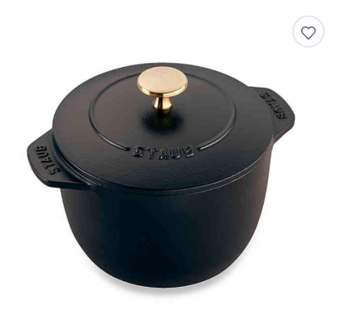
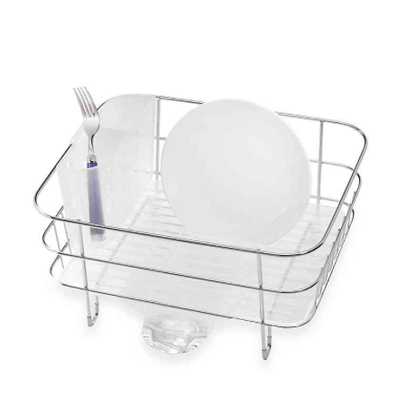
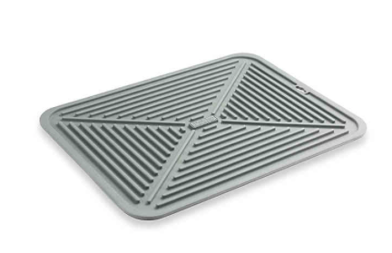
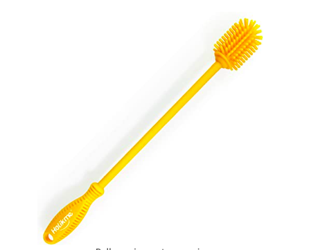

Satisfying Nice Objects
![]()
- It feels good in my hand
- It fits in the side pocket of my backpack
- It keeps water cold
- It looks good in my modern kitchen
- It is useful as a carafe to pour water into my coffee machine

- It makes perfect rice
- It looks good in my kitchen
- It is heavy and has a nice feel
- It will last forever
- It was expensive
- It reminds me of the pot of gold at the end of the rainbow

- It looks good in my kitchen
- It small enough to leave counter space
- It is small enough to fit inside the sink
- It is raised off the countertop so it doesn’t get wet underneath
- It is easy to clean
- It was inexpensive but is perfect with my kitchen design
- I like it so much that I have a second one in the closet.

- It matches the color of my countertop perfectly
- It gives me a safe landing pad so that I don’t have to worry about the countertop so much
- It is useful as a place to dry fruit
- It is easy to clean, and then hang with a clip hanger to dry.

- It is a pretty color
- It feels good to hold
- It does a great job of cleaning the retap bottle
- It is fun to use
- It is easy to clean